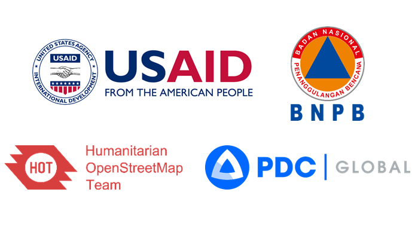

Welcome to the training site for surveyors and project managers. This site is developed under collaboration between Humanitarian OpenStreetMap Team (HOT) and Pacific Disaster Center (PDC) in the event of capacity development for data collection using OpenStreetMap to support InAWARE, a disaster management platform developed by Pacific Disaster Center (PDC).
